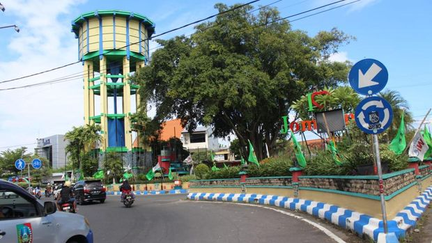

About my Hometown
My current hometown, Jombang is located in East Java, Indonesia, situated southwest of Surabaya. Based from what I have discover from google, the regency itself covering an area of 1,115 km², it has a population of over 1.371 million people (in 2023). While it might not be a tourist city, it's famous for something else: being a major center for Islamic scholarship. That's why its most famous nickname is the "City of Santri" (City of Students).